압연기능사 (2016-07-10 기출문제)
1과목: 금속재료일반
1. 강자성을 가지는 은백색의 금속으로 화학반응용 촉매, 공구 소결재로 널리 사용되고 바이탈륨의 주성분 금속은?
- Ti
- Co
- Al
- Pt
(정답률: 54%)

2. Al의 표면을 적당한 전해액 중에서 양극 산화 처리하면 표면에 방식성이 우수한 산화 피막층이 만들어진다. 알루미늄의 방식 방법에 많이 이용되는 것은?
- 규산법
- 수산법
- 탄화법
- 질화법
(정답률: 66%)
3. 금속의 결정구조에서 조밀육방격자(HCP)의 배위수는?
- 6
- 8
- 10
- 12
(정답률: 77%)
4. 금속의 결정구조에 대한 설명으로 틀린 것은?
- 결정입자의 경계를 결정입계라 한다.
- 결정체를 이루고 있는 각 결정을 결정입자라 한다.
- 체심입방격자는 단위격자 속에 있는 원자수가 3개이다.
- 물질을 구성하고 있는 원자가 입체적으로 규칙적인 배열을 이루고 있는 것을 결정이라 한다.
(정답률: 83%)
5. 강의 표면경화법이 아닌 것은?
- 풀림
- 금속용사법
- 금속침투법
- 하드페이싱
(정답률: 66%)
6. 잠수함, 우주선 등 극한 상태에서 파이프의 이음쇠에 사용되는 기능성 합금은?
- 초전도 합금
- 수소 저장 합금
- 아모퍼스 합금
- 형상 기억 합금
(정답률: 69%)
7. 재료에 어떤 일정한 하중을 가하고 어떤 온도에서 긴 시간 동안 유지하면 시간이 경과함에 따라 스트레인이 증가하는 것을 측정하는 시험 방법은?
- 피로 시험
- 충격 시험
- 비틀림 시험
- 크리프 시험
(정답률: 72%)
8. 해드필드강(hadfield steel)에 대한 설명으로 옳은 것은?
- Ferrite계 고 Ni강이다.
- Pearlite계 고 Co강이다.
- Cementite계 고 Cr강이다.
- Austeniter계 고 Mn강이다.
(정답률: 69%)
9. 비금속 개재물이 강에 미치는 영향이 아닌 것은?
- 고온 메짐의 원인이 된다.
- 인성은 향상시키나 경도를 떨어뜨린다.
- 열처리시 개재물로 인한 균열을 발생시킨다.
- 단조나 압연 작업 주에 균열의 원인이 된다.
(정답률: 63%)
10. 탄소강에서 탄소의 함량이 높아지면 낮아지는 값은?
- 경도
- 항복강도
- 인장강도
- 단면수축률
(정답률: 55%)
11. 3~5%?Ni, 1%Si을 첨가한 Cu 합금으로 C 합금이라고도 하며 강력하고 전도율이 좋아 용접봉이나 전극재료로 사용되는 것은?
- 톰백
- 문쯔메탈
- 길딩메탈
- 코슨합금
(정답률: 62%)
12. 주석청동의 용해 및 주조에서 1.5 ~ 1.7%의 아연을 첨가할 때의 효과로 옳은 것은?
- 수축율이 감소된다.
- 침탄이 촉진된다.
- 취성이 향상된다.
- 가스가 혼입된다.
(정답률: 52%)
13. 도면에 표시된 기계부품 재료 기호가 SM45C일 때 45C가 의미하는 것은?
- 제조방법
- 탄소함유량
- 재료의 이름
- 재료의 인장강도
(정답률: 84%)
14. 구멍
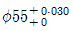
와 축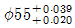
에서 최대 틈새는?- 0.010
- 0.020
- 0.030
- 0.039
(정답률: 68%)
15. 척도에 대한 설명 중 옳은 것은?
- 축척은 실물보다 확대하여 그린다.
- 배척은 실물보다 축소하여 그린다.
- 현척은 실물의 크기와 같은 크기로 1:1로 표현한다.
- 척도의 표시 방법 A:B에서 A는 물체의 실제크기이다.
(정답률: 85%)
2과목: 금속제도
16. 화살표 방향이 정면도라면 평면도는?
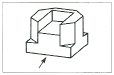
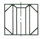
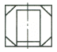
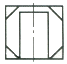
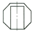
(정답률: 83%)
17. 다음 여러 가지 도형에서 생략할 수 없는 것은?
- 대칭 도형의 중심선의 한쪽
- 좌우가 유사한 물체의 한쪽
- 길이가 긴 축의 중간 부분
- 길이가 긴 테이퍼 축의 중간 부분
(정답률: 70%)
18. 치수기입의 요소가 아닌 것은?
- 숫자와 문자
- 부품표와 척도
- 지시선과 인출선
- 치수 보조 기호
(정답률: 73%)
19. 정투상도법에서 “눈→투상면→물체”의 순으로 투상할 경우의 투상법은?
- 제1각법
- 제2각법
- 제3각법
- 제4각법
(정답률: 84%)
20. 표면의 결 지시 방법에서 대상면에 제거가공을 하지 않는 경우 표시하는 기호는?
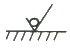
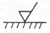
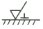
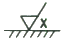
(정답률: 72%)
21. 동력전달 기계요소 중 회전 운동을 직선 운동으로 바꾸거나, 직선 운동을 회전 운동으로 바꿀 때 사용하는 것은?
- V벨트
- 원뿔키
- 스플라인
- 래크와 피니언
(정답률: 74%)
22. 대상물의 일부를 파단한 경계 또는 일부를 떼어낸 경계를 표시하는 파단선의 선은?
- 굵은 실선
- 가는 실선
- 가는 파선
- 가는 1점쇄선
(정답률: 55%)
23. 다음 중 선긋기를 올바르게 표시한 것은 어느 것인가?
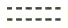
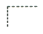
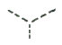
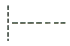
(정답률: 75%)
24. 유니파이 보통나사를 표시하는 기호로 옳은 것은?
- TM
- TW
- UNC
- UNF
(정답률: 66%)
25. 공형의 형상설계시 유의하여야 할 사항이 아닌 것은?
- 압연속도와 온도를 고려한다.
- 구멍수를 많게 하는 것이 좋다.
- 최후에는 타원형으로부터 원형으로 되게 한다.
- 패스마다 소재를 90°씩 돌려서 압연되게 한다.
(정답률: 83%)
26. 냉간압연제품의 결함을 두께 정밀도와 형상 결함으로 나눌 때 형상 결함과 관계 깊은 것은?
- 빌드 업
- 채터 마크
- 판 앞뒤 부분 치수 불량
- 정상 압연부 두께 변동
(정답률: 62%)
27. 냉간 압연의 일반적인 공정 순서로 옳은 것은?
- 열연 Coil → 산세 → 정정 → 냉간 압연 → 표면청정 → 풀림 → 조질 압연
- 열연 Coil → 산세 → 냉간 압연 → 정정 → 표면청정 → 풀림 → 조질 압연
- 열연 Coil → 산세 → 냉간 압연 → 표면청정 → 풀림 → 조질 압연 → 정정
- 열연 Coil → 산세 → 냉간 압연 → 표면청정 → 풀림 → 정정 → 조질 압연
(정답률: 70%)
28. 열간 압연시 발생하는 슬래브 캠버(Camber)의 발생 원인이 아닌 것은?
- 상하 압하의 힘이 다를 때
- 소재 좌우 두께 편차가 있을 때
- 상하 Roll 폭 방향 간격이 다를 때
- 소재의 폭방향으로 온도가 고르지 못할 때
(정답률: 52%)
29. 롤에 스폴링(spalling)이 발생되는 경우가 아닌 것은?
- 롤 표면 부근에 주조 결함이 생겼을 때
- 내균열성이 높은 롤의 재질을 사용하였을 때
- 여러 번의 롤 교체 및 연마 후 많이 사용하였을 때
- 압연이상에 의하여 국부적으로 강한 압력이 생겼을 때
(정답률: 57%)
30. 판을 압연할 때 압연재가 롤과 접촉하는 입구측과 속도를 VE, 롤에서 빠져나오는 출구측의 속도를 VA, 그리고 중립점의 속도를 VO라 할 때 각각의 속도 관계를 옳게 나타낸 것은?
- VE ＜ VO ＜ VA
- VA ＞ VE ＞ VO
- VE ＜ VA ＜ VO
- VE = VA = VO
(정답률: 73%)
3과목: 압연기술
31. Block mill 의 특징을 설명한 것 중 옳은 것은?
- 구동부의 일체화로 고속회전이 불가능하다.
- 소재의 비틀림이 많아 표면흠이 많이 발생한다.
- 스탠드 간 간격이 좁기 때문에 선후단의 불량부분이 짧아져 실수율이 높다.
- 부하용량이 작은 유막베어링을 채용함으로서 치수정도가 높은 압연이 가능하다.
(정답률: 56%)
32. 산세라인에서 하는 작업 중 틀린 것은?
- 탬퍼링
- 스케일 제거
- 코일의 접속 용접
- 스트립의 양 끝 부분 절단
(정답률: 55%)
33. 압연기에서 롤과 재료 사이의 접촉각을 A, 마찰각을 B 로 할 때, 재료가 압연기에 물려들어 갈 조건은?
- A ＞ 2B
- A ＞ B
- A ＜ B
- A = B
(정답률: 69%)
34. 압연할 때 스키드 마크 부분의 변형 저항으로 인하여 생기는 강판의 주 결함은?
- 표면균열
- 판 두께 편차
- 딱지흠
- 헤어 크랙
(정답률: 49%)
35. 다음 압연조건 중 압연제품의 조직 및 기계적 성질의 변화와 관련이 적은 것은?
- 냉각속도
- 압연속도
- 압하율
- 탈스케일
(정답률: 62%)
36. 대구경관을 생산할 때 쓰이며, 강대를 나선형으로 감으면서 아크 용접하는 방법으로 외경 치수를 마음대로 선택하 수 있는 강관 제조법은?
- 단접법에 의한 강관 제조
- 롤 벤더(roll bender) 강관 제조
- 스파이럴(spiral) 강관 제조
- 전기저항 용접법에 의한 강관 제조
(정답률: 70%)
37. 공형설계의 실제에서 롤의 몸체길이가 부족하고, 전동기 능력이 부족할 때, 폭이 좁은 소재 등에 이용되는 공형 방식은?
- 다곡법
- 플랫방식
- 버터플라이방식
- 스트레이트방식
(정답률: 64%)
38. 압연 두께 자동제어(AGC)의 구성요소 중 압하력을 측정하는 것은?
- 굽힘블록
- 로드셀
- 서브밸브
- 위치검출기
(정답률: 79%)
39. 압연 가공에서 통과 전 두께가 40mm 이던 것이 통과 후 24mm로 되었다면 압하율은 얼마인가?
- 35%
- 40%
- 45%
- 50%
(정답률: 67%)
40. 과잉공기계수(공기비)가 2.0 이고, 이론 공기량이 9.35m3/kg 일 때 실제 공기량(m3/kg)은?
- 8.4
- 12.6
- 16.7
- 18.7
(정답률: 68%)
41. 압연 중에 소재 온도를 조정하여 최종 패스의 온도를 낮게 하면 제품의 조직이 미세화하여 강도의 상승과 인성이 개선되는 압연 방법은?
- 완성 압연
- 크로스 롤링
- 폭내기 압연
- 컨트롤드 롤링
(정답률: 61%)
42. 열연공정인 R S B 혹은 V S B에서 실시하는 작업이 아닌 것은?
- 스케일(scale) 제거
- 슬래브(slab) 폭 변화
- 트리밍(trimming) 작업
- 슬래브(slab) 두께 변화
(정답률: 57%)
43. 중후판 소재의 길이 방향과 소재의 강괴축이 직각되는 압연 작업으로 제품의 폭 방향과 길이 방향의 재질적인 방향성을 경감할 목적으로 실시하는 것은?
- 크로스 롤링
- 완성 압연
- 컨트롤드 롤링
- 스케일 제거 작업
(정답률: 66%)
44. 조 압연기에 설치된 AWC(Automatic Width Control)가 수행하는 작업은?
- 바의 폭 제어
- 바의 형상 제어
- 바의 온도 제어
- 바(bar)의 두께 제어
(정답률: 63%)
45. 냉간압연에 대한 설명으로 틀린 것은?
- 치수가 정확하고 표면이 깨끗하다.
- 압연 작업의 마무리 작업에 많이 사용된다.
- 재료의 두께가 얇은 판을 얻을 수 있다.
- 열간 압연판에서는 이방성이 있으나 냉간 압연판은 이방성이 없다.
(정답률: 73%)
4과목: 압연설비
46. 압연재가 롤 사이에 들어갈 때 접촉부에 있어서 압연 작용이 가능한 전제 조건이 틀린 것은?
- 접촉부 안에서의 재료의 가속은 무시한다.
- 압연재는 접촉부 이외에서는 외력은 작용하지 않는다.
- 압연 방향에 대한 재료의 가로 방향의 증폭량은 무시한다.
- 압연 전후의 통과하는 재료의 양(체적)을 다르게 한다.
(정답률: 57%)
47. 열연코일을 냉간압연하기 전에 산세처리하는 이유는?
- 굴곡면의 교정
- 가공경화의 연화
- 스케일의 제거
- 압연저항의 감소
(정답률: 71%)
48. 고품질의 형상을 개선하기 위한 압연 공정은?
- 냉간압연
- 열간압연
- 조질압연
- 분괴압연
(정답률: 72%)
49. 열간압연 정정 라인(Line)의 기능 중 경미한 냉간압연에 의해 평탄도, 표면 및 기계적 성질을 개선하는 설비는?
- 산세 라인(Line)
- 시어 라인(Sheat Line)
- 슬리터 라인(Slitter Line)
- 스킨 패스 라인(Skin Pass Line)
(정답률: 70%)
50. 안전점검의 가장 큰 목적은?
- 장비의 설계상태를 점검
- 투자의 적정성 여부 점검
- 위험을 사전에 발견하여 시정
- 공정 단축 적합의 시정
(정답률: 85%)
51. 연속 풀림(CAL) 설비를 크게 입측, 중앙, 출측 설비로 나눌 때 입측 설비에 해당되는 것은?
- 풀림로
- 루프 카
- 벨트 래퍼
- 페이오프 릴
(정답률: 59%)
52. 1패스로써 큰 압하율을 얻는 것으로 상·하부 받침 롤러의 주변에 20~26 개의 작은 작업 롤을 배치한 압연기는?
- 분괴 압연기
- 유성 압연기
- 2단식 압연기
- 열간 조압연기
(정답률: 68%)
53. 대형 열연압연기의 동력을 전달하는 스핀들(spindle)의 형식과 거리가 먼 것은?
- 기어 형식
- 슬리브 형식
- 플랜지 형식
- 유니버셜 형식
(정답률: 47%)
54. 재해의 기본원인 4M에 해당하지 않는 것은?
- Machine
- Media
- Method
- Management
(정답률: 69%)
55. 스티립의 진행이 용이하도록 하부 워크롤 상단부를 스트립 진행 높이보다 높게 맞추는 것을 무엇이라 하는가?
- 랩(lap)
- 갭(gap)
- 패스 라인(pass line)
- 클리어런스(clearance)
(정답률: 46%)
56. 열간 스카핑에 대한 설명 중 옳은 것은?
- 손질 깊이의 조정이 용이하지 않다.
- 산소 소비량이 냉간 스카핑에 비해 적다.
- 작업 속도가 느리고, 압연능률을 떨어뜨린다.
- 균일한 스카핑은 가능하나 평탄한 손질면을 얻을 수 없다.
(정답률: 57%)
57. 압연기의 구동장치 중 피니언의 역할은?
- 제품을 안내하는 기구
- 강편을 추출하는 기구
- 전동기 감독을 하는 기구
- 동력을 각 롤에 분배하는 기구
(정답률: 80%)
58. 열간 스트립 압연기(hot strip mill)의 사상 스탠드 수를 증가시키는 것과 관련이 가장 적은 것은?
- 제품형상 품질이 향상된다.
- 소재의 산화물 제거가 용이하다.
- 보다 얇은 최종 판두께를 얻을 수 있다.
- 각 스탠드의 부하배분이 경감되어 속도가 증가한다.
(정답률: 47%)
59. 일반적으로 압연기 전체로서는 완전한 강체는 없으며 압연 중에는 롤의 변형, 하우징 변형 등의 탄성변형이 생기는 현상을 무엇이라 하는가?
- 롤(Roll) 틈새
- 롤(Roll) 점핑
- 롤(Roll) 간극
- 롤(Roll) 강성
(정답률: 45%)
60. 권취 완료시점에 권취 소재 외경을 급냉시키고 권취기 내에서 가열된 코일을 냉각하기 위한 냉각 장치는?
- 트랙 스프레이(track spray)
- 사이드 스프레이(side spray)
- 버티칼 스프레이(vertical spray)
- 유니트 스프레이(unit spray)
(정답률: 59%)